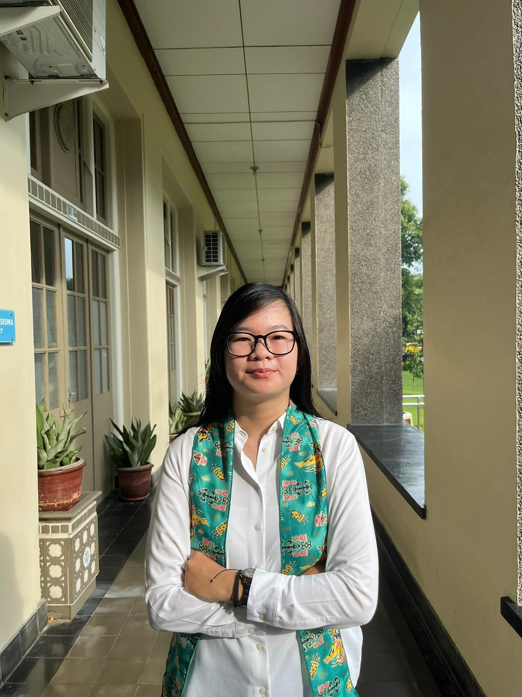

Final-year Mathematics student at Gadjah Mada University with hands-on experience in audit quality assurance at FIFGROUP (Astra Group) and statistical data analysis at BPS. I turn complex data into actionable insights.

Click any project to see full details, methodology, and documentation.
Reviewed audit working papers across 94 networks and assessed report quality using the 5C framework. Identified gaps in over 40% of WPs.
Built a multiple linear regression model analyzing HDI predictors in Yogyakarta. Found education duration was a stronger predictor than economic growth.
Led 81 members, managed 64 initiatives with structured planning, budget oversight, and cross-team coordination.
Data-informed learning plans for 20+ students, driving consistent 90+ scores through performance tracking.
Active in community service and event volunteering: KKN Papua (5 programs), Tur Sama-Sama 2025, and Yogyakarta X Beauty 2025.
Technical and professional competencies developed through academic study and hands-on experience.
Relevant Coursework: Statistics, Financial Mathematics, Optimization Methods, Stochastic Processes, Data Analysis
Grading Assistant: Calculus II & Multivariable Calculus I (2024), Calculus II & Complex Variable I (2025)
GPA: 3.53 / 4.00Open for Data Analyst, Business Analyst, and Audit Intern opportunities.